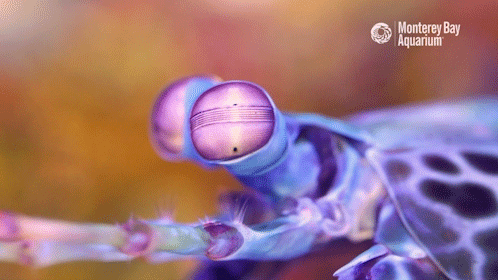
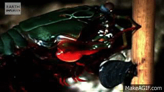
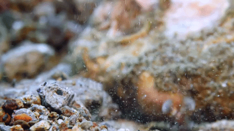

Features
 Powerful Punch
Powerful Punch
Can easily break shells of their prey and even aquarium glass. These claws can accelerate at a rate comparable to that of a .22 caliber bullet when fired, having around 1500 newtons of force with each swing/attack.
 Versatile Vision
Versatile Vision
Can detect ultraviolet and polarized light (which is invisible to humans). Additionally, they have trinocular vision and can see depth with each eye independently, giving them the ability to track fast-moving prey with precision.

Changing ColorsCan display flourescent colors that change for the sake of camouflage or communication. This ability is due to specialized cells called chromatophores that contain pigments and can expand or contract to show different colors.

Cavitation ShockwaveTheir strike is so fast it can create tiny vapor bubbles in the water. When those bubbles collapse, they produce a shockwave that can help stun prey—even if the punch doesn’t fully connect.
 Armored Exoskeleton
Armored Exoskeleton
Mantis shrimp are built to take impact. Their exoskeleton and striking clubs have layered, tough structures that resist cracking, letting them deliver repeated hits without damaging themselves.

Lightning-Fast ReflexesMantis shrimp have insanely fast reaction times, letting them track and strike moving prey in a split second. Their nervous system is built for speed, so they can time attacks with crazy accuracy—even in the chaotic movement of reef water.
Fun Facts
Found mostly in tropical coral reef ecosystems.
Engage in highly ritualized, non-lethal fights to settle territorial disputes over burrows.
-
infoWhy are they called mantis shrimp?Their front limbs resemble a praying mantis, but they are crustaceans.
-
flash_onHow strong is their punch?The strike can reach speeds of over 50 mph underwater.